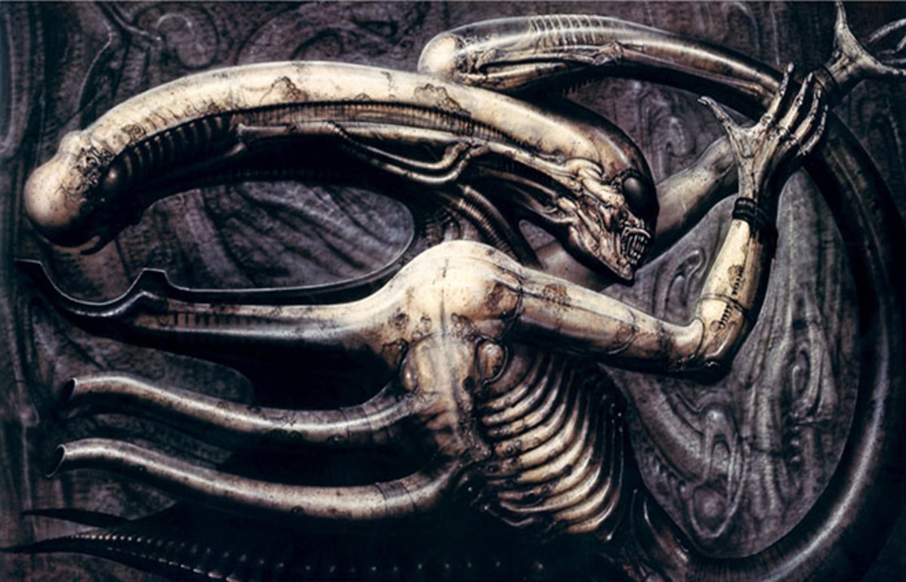
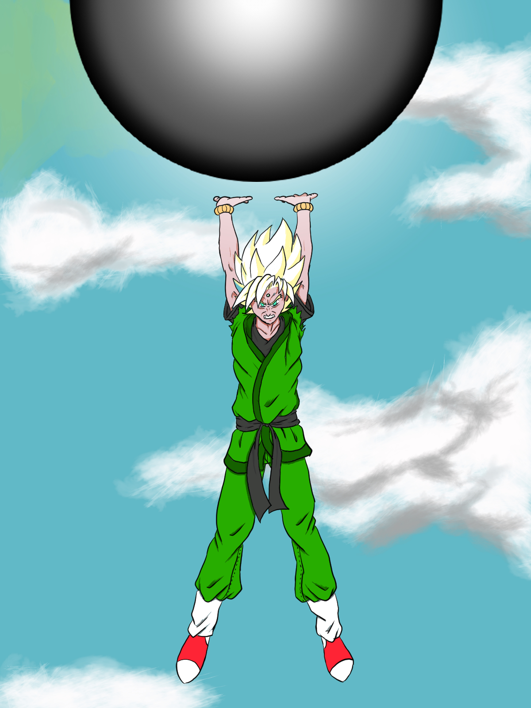

A little about my art background
I was first taken by the world of art as a young boy. My father was a rather talented man and could produce works of many types.
Unfortunately it wasn't a hereditary trait and I had to work on my skills from that young age.
I was thoroughly inspired by my father's ability to produce hand drawings, woodwork and metal work. He once created his own "Freddy Kreuger" gauntlet/glove as
a display. This then lead to him creating 2 full Kreuger arms, which were both sporting the iconic glove and held his speakers up on the wall.
Further from this I learned about a variety of art styles, most importantly the styles of H.R. Geiger, who was a true visionary.
His works were somewhat disturbing for most, but there was an undeniable beauty and elegance to what he created.

This is Geiger's piece, The Space Jockey. Made famous by the movie Alien.

This is the original concept of the Xenomorph from Alien
As you can see, Geiger's work blended a lot of science fiction, fantasy and eroticism. A move which was also used widely in the Hellraiser series.
Despite my admiration of these styles of art, I was drawn in by the world of manga and anime after watching a famous anime named Akira
This lead me down a weary path of learning, mistakes and corrections up until the point that PCs became capable of a "traditional" type of production.
This of course being the creation of touch sensitive graphics tablets, which is a whole new world. Requiring me to re-learn colour styles, pressure sensitivity
and trying to focus on 2 seperate screens at once without confusing myself.
I am yet to master this skill.

A piece I produced of an original character

Another piece of the aforementioned original character